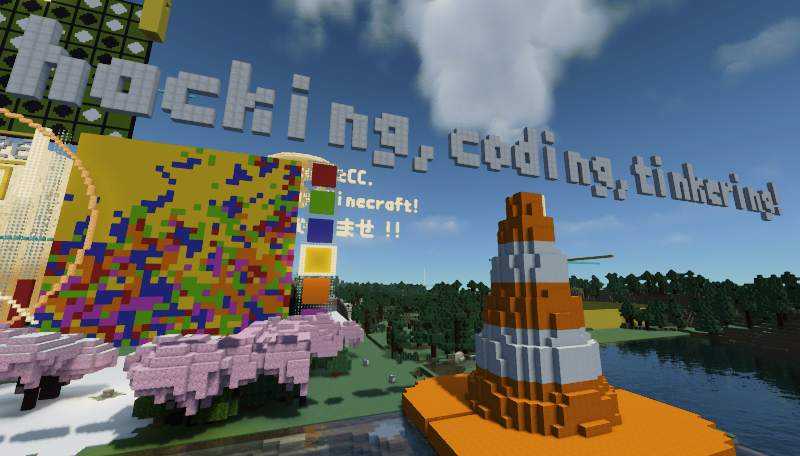
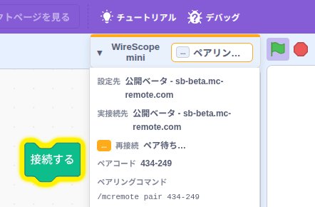
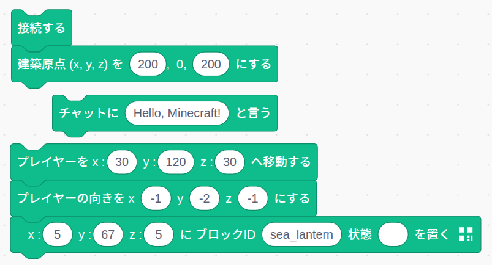
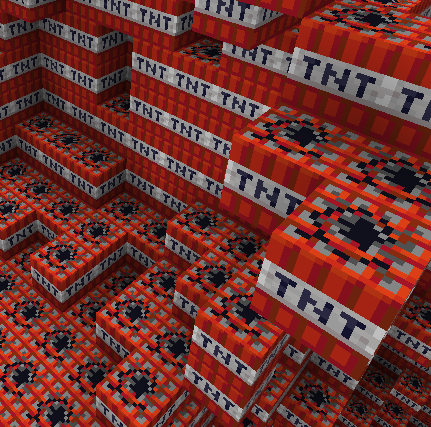

「マイクラをリモコンする」これは、公式のRconに始まり、マイクラアプリの代わりにプロトコルをシミュレートするものまで、様々なアプローチがすでにあるのに、なぜ、今さら「マイクラリモコン」なのか。
2026年、生成AIは「マイクラみたいなアプリ」さえ作る。使い捨てアプリが目の前で生まれる今、「アプリを作ったことがある」の価値も、「アプリ」の存在意義さえも揺らいでいる。「ほとんどコードを書いていない」と公言するプログラマーも増えた。さて、コーディングをこれから学ぶ意味、ある？
2017年、コーディングを「コードを触って・変えて・観察して・判断するループの中で、創造性を引き出す行為」と捉えた。（「Coding vs. Programming（Scratch Meetup Tokyo, 2017）」、PDF）小さく試し、組み合わせ、分解して直す。ブロック遊びにも似た、この手触りにこそ創造性が宿る。
生成AIの時代に、この解釈はむしろ重みを増している。生成、打ち込みは任せていい。判断は人間が握る。「要求仕様書は満たしています」というだけの使えないアプリが量産されてきたように、元々、コードを書くだけではダメだったのだ。
だから、もちろん、学ぶ意味がある。ただ、学ぶ中身が変わる。消えるのは暗記と打ち込みの労力で、消えないのは判断のための足場だ。その足場は、目の前のTODOから始まり、ビジョンを越え、ミッションまで続いている。コードは、意図と現象をつなぐ「読める層」。AIとの協働が進むほど、相手の仕事を読めることが前提になる。マイクラの世界なら、コードを変えた結果を目で見ながら試せる。マイクラリモコンは、「手触り感のある試行錯誤」の道具を目指している。
sb-beta.mc-remote.com （マイクラリモコン 公式 箱庭サーバー ベータ版）
25565（デフォルトなので省略可能。）25565（デフォルトの19132ではないので注意。）
面倒なインストールは一切不要。PC／タブレット／スマホで開いたマイクラと、PC／タブレットのブラウザを使います。ブラウザのScratchで直感的にマイクラの世界を遠隔操作できます。
👉 Web版Scratchエディタ（ベータ版）を開くWireScope miniに表示される
ペアリングコマンド /mcremote pair NNN-NNN
をゲーム内チャットに貼り付け、Enterを押すと認証が完了。コマンド先頭にスペースがあると無効なので注意。


VS Codeなどのエディタでは自動補完でブロックIDなどが入力できる公式Pythonライブラリ。最新マインクラフトの世界へ向けて、自分のアイデアを自由にコード化できます。
まずは、ターミナルを使って簡単にPythonモジュールをインストールして、チャットメッセージの表示、きれいに輝くシーランタンブロックの配置など、試してみましょう。
Pythonモジュール（クライアント/ API）のインストール:
pip install minecraft-remote-api -U希望のリリースタグを指定すれば、PyPIに登録されている安定版ではなく、GitHub.comの最新版などを使うことができます。
pip install -U git+https://github.com/Naohiro2g/minecraft-remote-api.git@v2301.0.0b7.post2ここから先は、VS CodeのJupyter Notebookで、一行ずつ実行するのもオススメ。
最小コード（hello.py）:
from mc_remote import Minecraft
# 公式箱庭サーバー（ベータ）に接続
mc = Minecraft.create(address="sb-beta.mc-remote.com", port=25575)
# 建築原点の設定
mc.setBuildOrigin(200, 0, 200)
# チャット送信
mc.postToChat("Hello, Minecraft from Python!")
# プレイヤー位置、向きの設定
mc.setPos(30, 120, 30) # (230, 120, 230) に移動
mc.setPose(-1, -2, -1)
# ブロック設置
# 建築原点からの相対座標で (205, 67, 205) に置かれます
mc.setBlock(5, 67, 5, "sea_lantern")
python hello.py を実行後、ターミナルに表示される /mcremote pair NNN-NNN
をゲーム内チャットに貼り付け、Enterを押すと認証が完了します。認証は2時間有効。
先人たちの功績を受け継ぎ、従来の「教育」から「学びの支援」へ。
Minecraft Remote（mc-remote /
マイクラリモコン）は、マインクラフトを外部からプログラムで遠隔操作するためのオープンソースシステムです。PaperMCサーバー上で動作する専用プラグイン（McRemote）と、利用者のコードを仲介するクライアントAPI（各言語版）から構成されています。
本プロジェクトは、RaspberryJuice（zhuowei氏）、mcpi（Martin O'Hanlon氏）、JuicyraspberryPie（wensheng氏）といった先人たちの先駆的な功績と、コミュニティの英知を受け継ぎ、最新のマインクラフト環境へ向けて再構築したものです。
先人たちのプロジェクトリファレンス:
初学者が自学自習アプローチ（Self-Learning Approach）を獲得できるよう支援すること。 単なるプログラミング言語の文法や技術スキルの習得にとどまらず、「自分で課題を発見し、試し、学ぶ姿勢」を育むことを最上位の目的としています。コーディング「を」学ぶ、ではなく、コーディング「で」学ぶ。

PaperMCサーバー上で動作する専用プラグイン。JSON-RPC 2.0プロトコルによる高速・安全な接続エンジン。mc-remote（マイクラリモコン）サーバーとして動作。
GitHubで見る →ブラウザだけで動くWeb版Scratchエディタ（Scratch 3.0 フォーク＝改造版）。インストール不要で、IndexedDBによる作品自動保存にも対応。
GitHubで見る →標準APIを備えた公式Pythonクライアントパッケージ。ブロックID、エンティティIDのカタログ補完機能を提供。
GitHubで見る →クライアントとサーバーの間を行き来する通信内容（ワイヤメッセージ）をリアルタイムに覗き見できる観察・学習ツール。現在、ScratchやPythonクライアントと連携可能。
WireScope Betaを開く →Java環境からmc-remoteサーバーに接続して制御するためのJavaクライアントライブラリ。
GitHubで見る →Unityで利用可能なC#サーバー／クライアント。mc-remoteサーバー／クライアントとの相互接続で、Pythonで書いてUnity世界に建築、C#でマイクラ世界に建築、などが可能。（※旧プロトコル対応）
GitHubで見る →システム全体のアーキテクチャ、決定ログ（DECISIONS）、プロトコル契約、設計思想を管理する真実の源（SSOT）。LLM支援前提のナレッジベース型開発支援システムの根幹。
GitHubで見る →2027年春の教室本番導入に向けた、透明性のある公開ロードマップです。
各コンポーネントの動作確認済みバージョン対応表です。
| コンポーネント | 最新バージョン | プロトコル | マインクラフトバージョン / 備考 |
|---|---|---|---|
| McRemote（Plugin、ベータ） | 2301.0.0b7.post2 |
23.1.0 | Paper 1.21.11 |
| McRemote（Plugin） | v1.21.8-1.4.0 |
旧プロトコル | Paper 1.21.11 |
| minecraft-remote-api (Python) | 2301.0.0b7.post2 |
23.1.0 | Python 3.10以上対応。PyPI安定版は旧プロトコル |
| scratch-editor (Scratch) | 2301.0.0b7.post2 |
23.1.0 | ブラウザ完結（Chrome, Safari, Edge等） |
| WireScope | 2301.0.0b7.post2 |
23.1.0 | 共通パケット観察Webアプリ |
| 公式箱庭マイクラサーバー（ベータ） | sb-beta.mc-remote.com |
23.1.0 | 1.21.11、Java版：TCP25565 / 統合版：UDP25565 |
| 公式箱庭マイクラサーバー | sb.mc-remote.com |
旧プロトコル | 1.21.11、Java版：TCP25565 / 統合版：UDP25565 |
getSign, setSign,
updateSignLine）、ツルハシによるブロック叩きイベント（pickaxe_poke）、ブラウザ内自動保存（IndexedDB）の導入。
state の分離）、空間識別子の Minecraft DimensionKey への統一、高速建築モード（DEBUG,
TRACE, FAST）の整備。
setPlayer 廃止、setWorld /
setBuildOrigin 導入）、向きを含むプレイヤー姿勢（getPose / setPose）の追加。
catalog.get）と、型補完アーティファクト（mc_constants）の生成機構。
/mcremote pair コマンド）の確立。